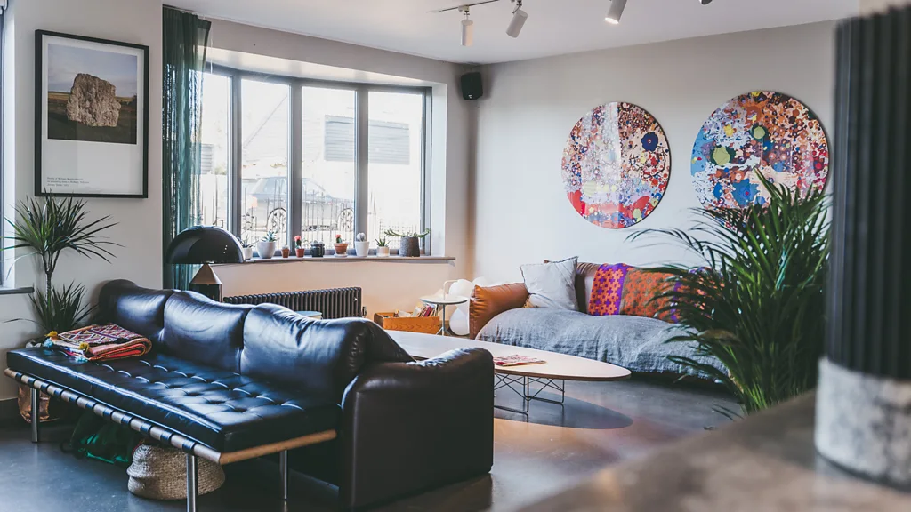

"It's about what speaks to you": Displaying paintings, prints, textiles and sculptures can all help create a fresh living space for the new year – here's how, according to the experts.
"Art that is carefully chosen and displayed can help pull the look of a room together."
January is a popular time of year to refresh priorities – and perhaps our surroundings too, creating a new mood for a new year. New artworks can transform a living space, and also inspire future interests, intentions, or the desire for fresh goals. Even repositioning our existing paintings, prints and photographs can revitalise a home and feel like a new start.
Imaginatively chosen and displayed art can both revive cherished memories and prompt feelings of wellbeing – and it can change the whole ambience of a space. Abstract art, for instance, evokes moods in a non-literal, suggestive way – a large painting or print dominated by loose, expressionistic mark-making can give a home a romantic, free-spirited feel, while a more hard-edged, graphic style gives a space a modern, urban feel. Acquiring and displaying art isn't the preserve of homeowners, either; in fact, it's a great way to make a rental home feel more personal, without having to redecorate – and your pictures can move on when you do. It's this flexibility that makes art such a useful element of home décor – artworks can be arranged, then reconfigured to change the character of a room. "A piece doesn't have to be in one location forever," says Katherine Kittoe, founder of Kittoe Contemporary, an online and physical art gallery and art consultancy that promotes emerging and established artists. "A re-hang of artworks every few years – similar in principle to re-hangs in large public galleries, though obviously on a more modest scale – can be hugely rewarding and refreshing."
This, though, raises the practical but important question of how to repair walls dented by holes left after hanging. "Small nails are your best friend – they're easy to patch up with spackling paste when it’s time to move out," says Cathy Glazer, founder of Artfully Walls, a curated site for art-buyers in the UK and US. "Lightweight pieces can be hung with thin nails and hooks from a basic picture-hanging kit. Most standard picture-hangers hold up to 30lbs. It's easier still to lean art on ledges or on stacks of books, mantelpieces or consoles for a very casual look." Of course, when art is added to a home, it must coexist with furniture and homeware accumulated over time. Yet it needn't vie for attention with existing elements or get visually lost among them – it can be artfully displayed adjacent to homeware with similar qualities, for example echoing the bold, colourful pattern in a rug or the sensual curves of ceramics. And it can be shown with ephemera – from postcards to family snaps – to create aesthetically pleasing juxtapositions.
"Whether it's travel posters, collages or fleamarket finds, your collection should reflect what resonates with you" – Cathy Glazer

Wall-hung art can counterbalance the bulky, imposing look of furniture that occupies a permanent spot, such as sofas, according to Sophie Goldhill, co-founder of Liddicoat & Goldhill and its interior design arm, Hector Interiors: "A striking painting can serve as a visual focal point paired with sofas and tables, and can offset the weight of larger pieces that could otherwise dominate a space," she tells the BBC.And introducing a new artwork into a room can make the space more cohesive, Goldhill adds. "Art offers an opportunity to link different design elements, such as contrasting materials or colours, in a space, ensuring it doesn't feel disjointed. A thoughtfully chosen piece of art can reflect or complement tones in fabrics or wood, tying the room's design together."
More like this:
- 'Mocha mousse' to plum
- The rare blue the Maya invented
- The climate warnings in 19th Century paintings
Opting for usable art can make buying and displaying artworks fun and accessible. A set of coasters and placemats – created with images by UK photographer Martin Parr and sold by art platform Plinth – is a good example. The aptly food-themed creations feature kitsch, close-up photos of cocktails filled with maraschino cherries, ice cream or tea in traditional cups and saucers.